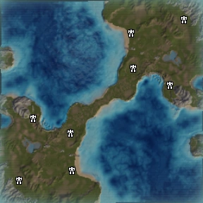

Добро пожаловать на арену, вдохновлённую легендарной картой Seton’s Clutch — одной из самых известных стратегических арен в классе игр наподобие Supreme Commander. Эта карта стала классикой среди многопользовательских баталий, использовалась в трейлерах и на главных экранах оригинальной игры, и до сих пор символизирует схватку больших армий в условиях жесткой конкуренции за ресурсы и контроль над территорией.
Сетеонское Заложение — это столкновение на узком перешейке между двумя мощными флангами. Древние поля сражений усеяны обломками техники и скелетами армии, напоминающими о том, сколько боёв здесь уже случилось. На кону — контроль над центральной частью и богатые ресурсы, которые дают преимущество в развитии и силе.
Ты — командир на этом поле: твоя цель — собрать изображение в правильном порядке, то есть восстановить порядок в хаосе. Как на стратегической карте, каждый ход важен, и каждая ошибка может стоить победы. Используй логику и планирование, чтобы сдвинуть фрагменты в нужном порядке и одержать победу!